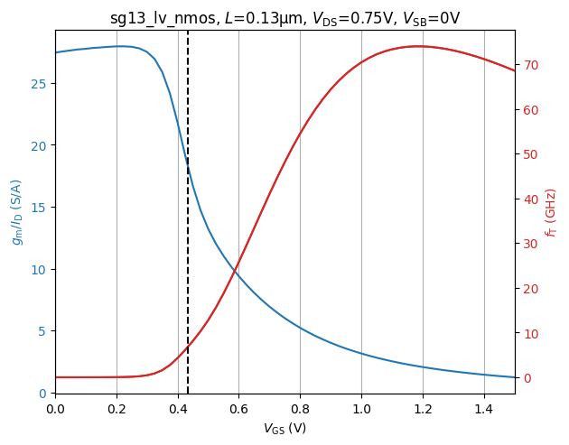
Transistor Sizing Using gm/ID Methodology
Analog (Integrated) Circuit Design
3 Transistor Sizing Using gm/ID Methodology
Transistor Sizing Using gm/ID Methodology
MOSFET Square-Law Model
One of the many simplifications of the square-law model is that the mobility of the charge carriers is assumed constant (it is not). Further, the existence of a threshold voltage is assumed, but in fact this voltage exists only given a certain definition, and depending on definition, its value changes. In addition, in nm CMOS, the threshold voltage is a function of many things, like \(W\) and \(L\).
3.1 MOSFET Characterization Testbench
MOSFET Characterization Testbench
Note on Characterization Testbench
The testbenches are relatively straightforward, with one exception: The drain current noise is sensed via the drain voltage source vd and converted to a noise voltage (node n) using a current-controlled voltage source (CCVS). This is necessary as the .noise simulation statement works with voltages.
MOSFET Characterization Testbench
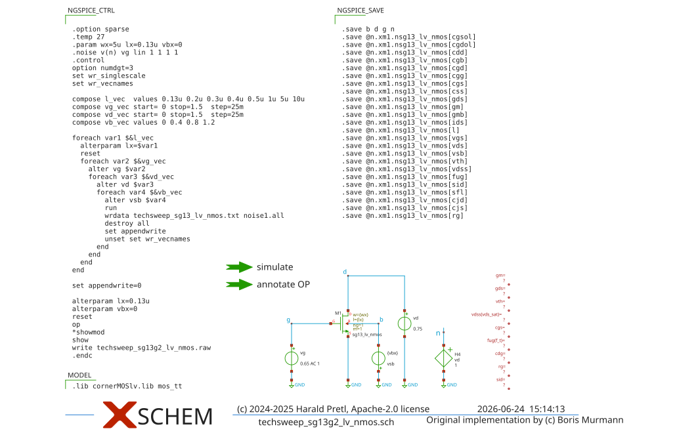
Figure 10: Testbench for LV NMOS \(g_\mathrm{m}/I_\mathrm{D}\) characterization.
MOSFET Characterization Testbench
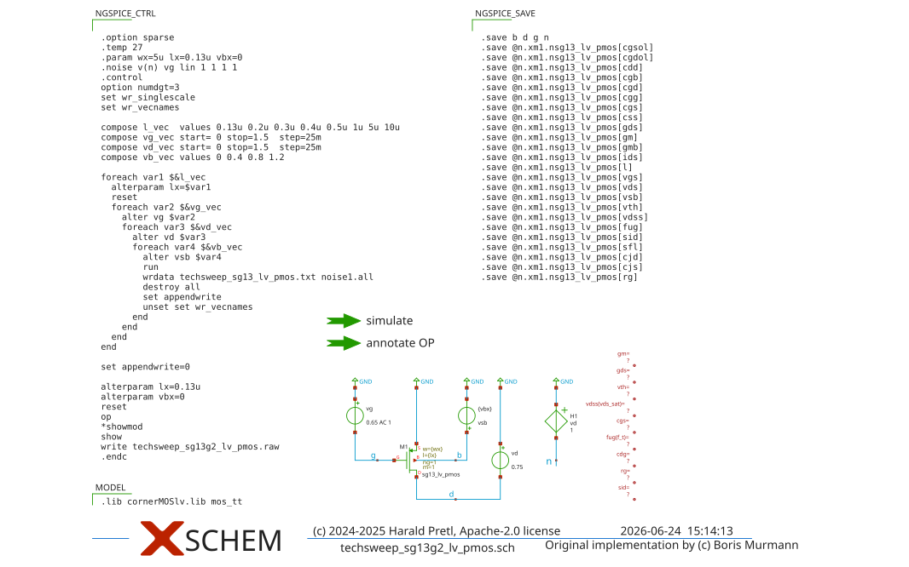
Figure 11: Testbench for LV PMOS \(g_\mathrm{m}/I_\mathrm{D}\) characterization.
MOSFET Characterization Testbench
Note on width \(W\)
In general, the device width could be included as a fifth sweep variable. However, this is not necessary since the parameters scale approximately linearly with \(W\) across the typical range encountered in analog design. For \(W > 2\,\text{µm}\) the error lies within about 1.5% for \(g_\mathrm{m}/I_\mathrm{D}\), \(g_\mathrm{m}/g_\mathrm{ds}\) and \(g_\mathrm{m}/C_\mathrm{gg}\) as described in (Jespers and Murmann 2017).
MOSFET Characterization Testbench
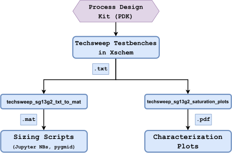
Figure 12: Overview of the \(g_\mathrm{m}/I_\mathrm{D}\) MOSFET characterization procedure (Dorrer 2025).
3.2 NMOS Characterization in Saturation
NMOS Characterization in Saturation
Power Consumption
Designing for minimum power consumption is pretty much always mandated. For battery-operated equipment it is a paramount requirement, but also in other equipment electrical energy consumption is a concern, and often severely limited by the cooling capabilities of the electrical system.
NMOS Characterization in Saturation
Note that \[ \frac{g_\mathrm{m}}{I_\mathrm{D}} = \frac{1}{n V_\mathrm{T}} \tag{3}\] for a MOSFET in weak inversion (i.e., small gate-source voltage).
For the classical square-law model of the MOSFET in strong inversion, \(g_\mathrm{m}/I_\mathrm{D}\) is given as \[ \frac{g_\mathrm{m}}{I_\mathrm{D}} = \frac{2}{V_\mathrm{GS}- V_\mathrm{th}} = \frac{2}{V_\mathrm{od}} \tag{4}\] with \(V_\mathrm{th}\) the threshold voltage and \(V_\mathrm{od}\) the so-called “overdrive voltage.” The latter is sometimes also dubbed the effective gate-source voltage \(V_\mathrm{eff}\) (Carusone et al. 2011).
NMOS Characterization in Saturation
Why 300 K?
Why are we so often using a temperature of \(300\,\text{K}\) for a typical condition? As this corresponds to roughly \(27^{\circ}\text{C}\), this accounts for some self heating compared to otherwise cooler usual room temperatures. Further, engineers like round numbers which are easy to remember, so \(300\,\text{K}\) is used as a proxy for room temperature.
NMOS Characterization in Saturation
NMOS Characterization in Saturation
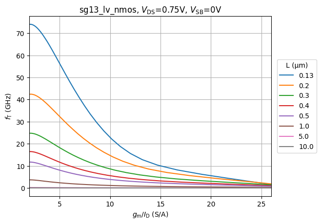
NMOS Characterization in Saturation
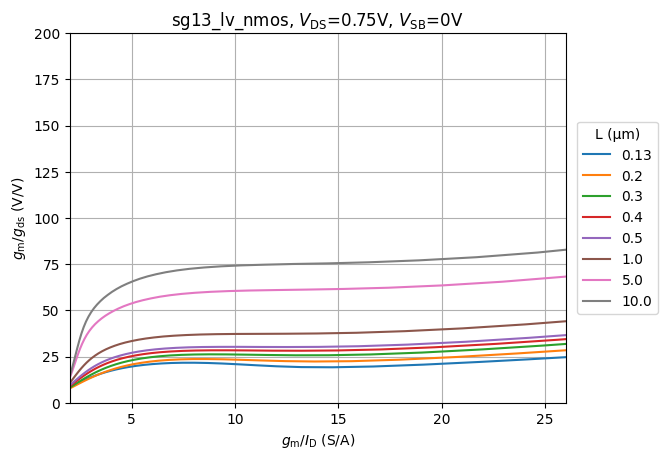
NMOS Characterization in Saturation
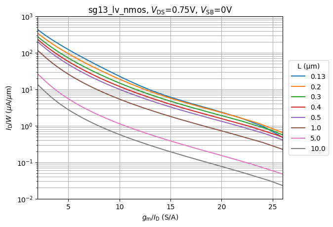
NMOS Characterization in Saturation
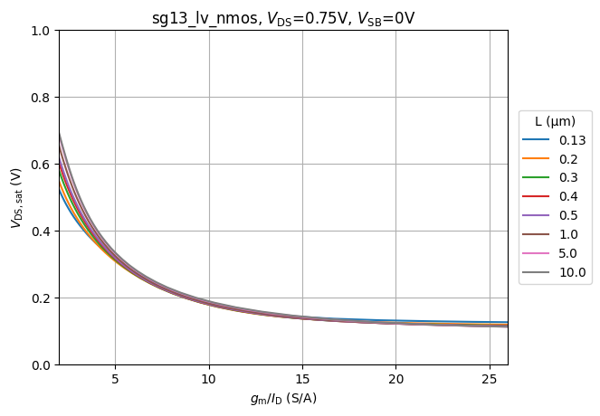
NMOS Characterization in Saturation
Noise Notation
We usually leave the \(\Delta f\) away for a shorter notation, so we write \(\overline{V_\mathrm{n}^2}\) when we actually mean \(\overline{V_\mathrm{n}^2}/\Delta f\). In case of doubt look at the unit of a quantity, whether it shows \(\text{V}^2\) or \(\text{V}^2/\text{Hz}\) or \(\text{V}/\sqrt{\text{Hz}}\) (or \(\text{A}^2\) or \(\text{A}^2/\text{Hz}\) or \(\text{A}/\sqrt{\text{Hz}}\)).
NMOS Characterization in Saturation
Noise Notation
Please also note that the pair of \(k T\) pretty much always shows up together, so when you do a calculation and you miss the one or the other, that is often a sign for miscalculation. Boltzmann’s constant \(k = 1.38 \cdot 10^{-23}\,\text{J/K}\) is just a scaling factor from thermal energy expressed as a temperature \(T\) to energy \(E = k T\) expressed in Joule.
NMOS Characterization in Saturation
Noise Notation
Further, when working with PSD there is the usage of a one-sided (\(0 \le f < \infty\)) or two-sided power spectral density (PSD) (\(-\infty < f < \infty\)). The default in this lecture is the usage of the one-sided PSD.
NMOS Characterization in Saturation
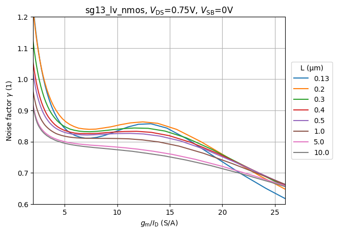
NMOS Characterization in Saturation
MOSFET Flicker Noise
The physical origin of flicker noise is the crystal interface between silicon (Si) and the silicon dioxide (SiO2). Since these are different materials, there are dangling bonds, which can capture charge carriers traveling in the channel. After a random time, these carriers are released, and flicker noise is the result. The amount of flicker noise is a function of the manufacturing process, and will generally be different between device types and wafer foundries.
NMOS Characterization in Saturation
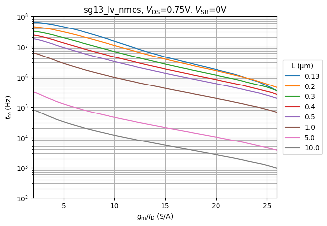
3.3 PMOS Characterization in Saturation
PMOS Characterization in Saturation
PMOS Sign Convention
In all PMOS plots we plot positive values for voltages and currents, to have compatible plots to the NMOS. Of course, in a PMOS, voltages and currents have different polarity compared to the NMOS.
PMOS Characterization in Saturation
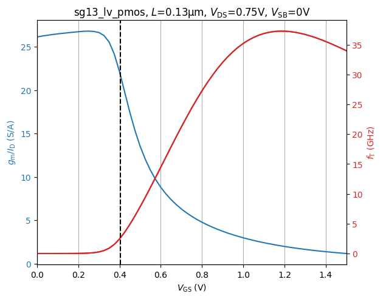
PMOS Characterization in Saturation
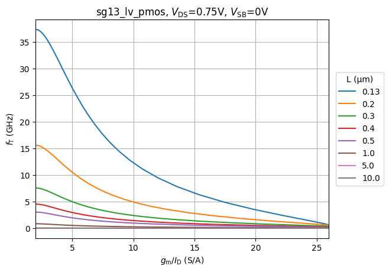
PMOS Characterization in Saturation
Beware of Modelling Issues
This example shows how important it is to benchmark the device models when starting to use a new technology. Modelling artifacts like the one shown are quite common, as setting up the device compact models and parametrize them according to measurement data is a very complex task. In any case, just be aware that modelling issues could exist in whatever PDK you are going to use!
PMOS Characterization in Saturation
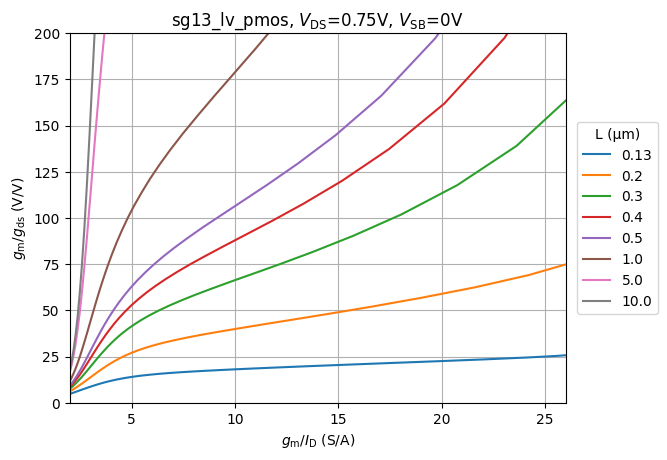
PMOS Characterization in Saturation
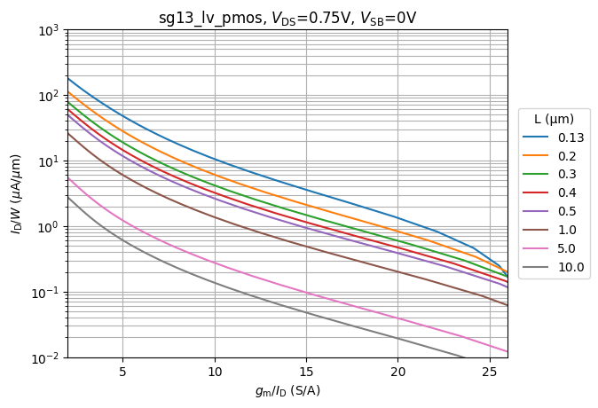
PMOS Characterization in Saturation
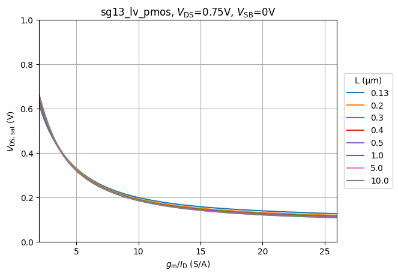
PMOS Characterization in Saturation
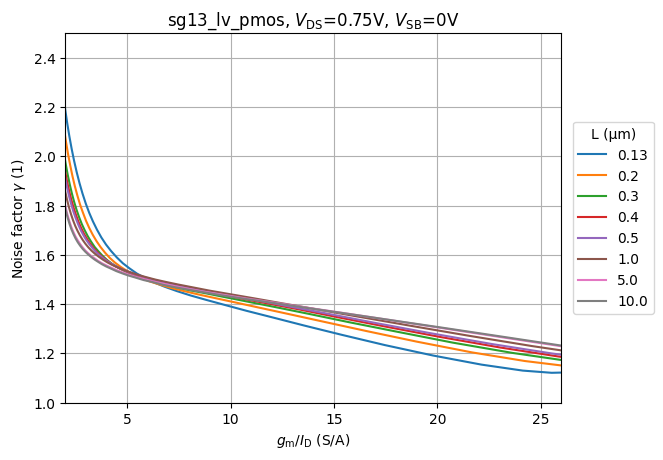
PMOS Characterization in Saturation
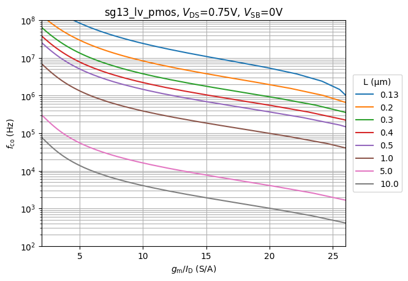
3.4 Tradeoffs in Saturation
Tradeoffs in Saturation

Figure 13: Overview of key design tradeoffs depending on the channel length \(L\) and transconductance efficiency \(g_\mathrm{m}/I_\mathrm{D}\) (Dorrer 2025).
3.5 NMOS and PMOS Characterization in Triode
NMOS and PMOS Characterization in Triode
- The resistance of the switch/MOSFET when it is turned on (\(R_\mathrm{on} = 1 / g_\mathrm{ds}\)).
- The shunt capacitance of the switch when it is turned off (\(C_\mathrm{off}\) is defined by the coupling capacitances between drain and source).
NMOS and PMOS Characterization in Triode
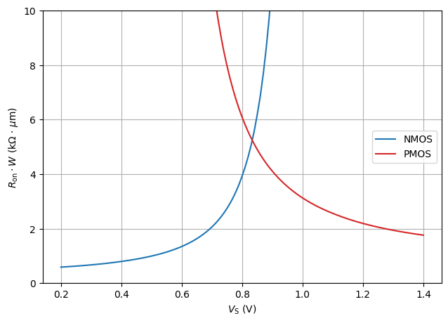
NMOS and PMOS Characterization in Triode
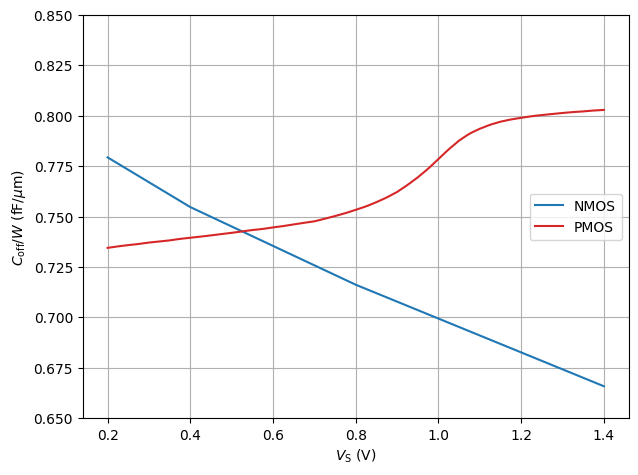
3.6 Tradeoffs in Triode
Tradeoffs in Triode
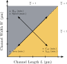
Figure 14: Overview of key design tradeoffs in switches depending on the channel width \(W\) and the channel length \(L\) (Dorrer 2025).
References
Carusone, Tony C., David Johns, and Kenneth Martin. 2011. Analog Integrated Circuit Design. Wiley.
Dorrer, Simon. 2025. “An Open-Source Adaptive Event-Based ADC for Bio-Signal Acquisition in 130 Nm CMOS.” https://epub.jku.at/obvulihs/content/titleinfo/12118473?query=dorrer.
Gray, Paul R., Paul J. Hurst, Stephen H. Lewis, and Robert G. Meyer. 2009. Analysis and Design of Analog Integrated Circuits. Wiley.
Jespers, Paul G. A., and Boris Murmann. 2017. Systematic Design of Analog CMOS Circuits: Using Pre-Computed Lookup Tables. Cambridge University Press.
Pretl, Harald, and Matthias Eberlein. 2021. “Fifty Nifty Variations of Two-Transistor Circuits: A Tribute to the Versatility of MOSFETs.” IEEE Solid-State Circuits Magazine 13 (3): 38–46. https://iic-jku.github.io/fifty-nifty-circuits/.
Silveira, F., D. Flandre, and P. G. A. Jespers. 1996. “A gm/ID Based Methodology for the Design of CMOS Analog Circuits and Its Application to the Synthesis of a Silicon-on-Insulator Micropower OTA.” IEEE Journal of Solid-State Circuits 31 (9): 1314–19. https://doi.org/10.1109/4.535416.